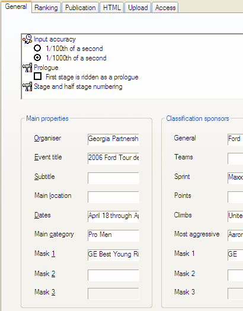

General Settings
Through in the
menu, and then choosing for the General
tab, you can edit the general settings for the event.

The following general settings can be made:
Set:
- Enable the
masks that are actually used for the event;
- Switch the input
accuracy for
arrival dialogs between 1/100ths and 1/1000ths of a second; and
- Set
the event to begin with a
prologue.
When the small size of the control holds you back from properly making
the settings, you can maximize the control in which you make these settings,
by double-clicking on any whitespace in the control.
Enter the following informative fields:
- Organiser name;
- Event title;
- Event subtitle;
- Description
or actual name of the main location;
- Dates of the event; possibly
the actual dates, but maybe better the name of a holiday weekend;
- Main
competitor category, such as "Juniors" or "GSI/II";
and
- Names or titles of the enabled
masks.
| This file was originally part of our V2003 software version, that was now shipped as part
of a V2005 bèta release — The information in this file may for that
reason not be entirely up-to-date or not be entirely accurate — The Help system
will shortly be updated in one of the upcoming releases of StageRace 2005 |

|